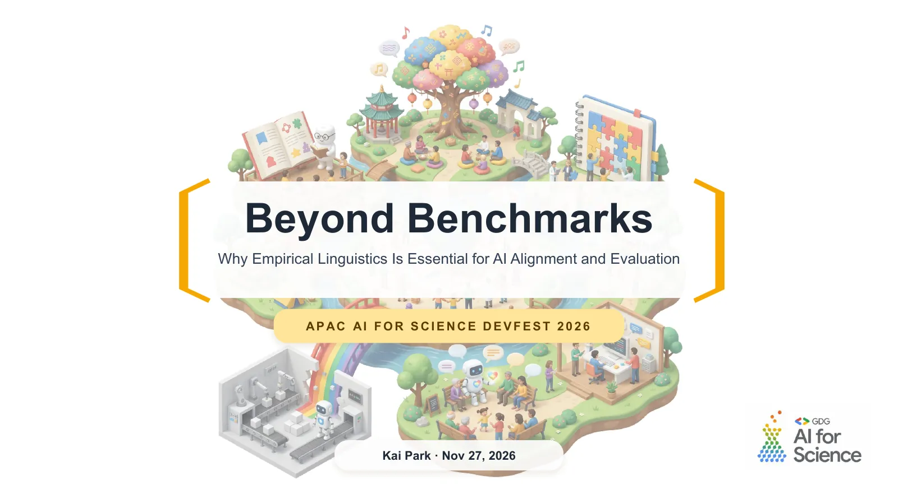

Beyond Benchmarks
Beyond Benchmarks: Why Empirical Linguistics Is Essential for AI Alignment and Evaluation
My session in the program → APAC AI for Science DevFest 2026 →
Materials

A 30-minute session in three parts: what I learned from my own research on modal particles and Korean color terms, practical notes on using AI in a research workflow, and the questions I want to explore next in AI alignment.
Rather than an exhaustive survey of every field mentioned, it connects papers I have been reading across these areas and shares my own perspective on where they intersect.
For time, the talk simplifies some results and their limitations. For example, I say Korean speakers were more accurate in the blue-green range. In the thesis, the accuracy advantage is general across all four color gradients, while the speed advantage is confined to the blue-green transition, where the Korean and English category boundaries diverge. That localized speed effect parallels the Russian-blues study (Winawer et al., 2007), whose effect also appeared in response times. Both studies are correlational. Before citing a finding, please check the full results in the MA thesis and the paper.
Limitations
- Correlational design
- Both studies show associations. The usage-salience account is a plausible interpretation, not a demonstrated cause; testing it needs experiments such as verbal interference, priming or neuroimaging.
- Where the accuracy advantage holds
- The accuracy advantage is significant in the pooled model across all four gradients. Within the blue-green category alone, the covariate-adjusted estimate points the same way but is not significant (p = .085), because the English-speaking sample there is small (293 trials).
- The speed advantage is local
- Setting aside the blue-to-white gradient, Korean speakers were faster only on the gradient crossing the blue-green transition, not on blue-to-red or blue-to-black. In the pooled model, with block count, age, color category and media use controlled, there is no overall speed difference (p = .70).
- English color terms in Study 1
- English forms were derived by translating the Korean terms, not collected from English speakers, so the 20 English derived forms may underestimate English. Korean also uses root-internal changes that English lacks, so the two systems are not structurally equivalent.
- Stimuli
- The blue-to-white gradient runs all the way to pure white, unlike the other three, which limits comparisons across color categories.
- Online data collection
- Screens and viewing conditions were not controlled. Gender could not be linked for most Korean participants, and ad delivery reached mostly female audiences, a possible exposure bias.
- Model choice
- Error rates include exact zeros, which a Gamma model does not support; refitting with Tweedie models left the language effect essentially unchanged.
- The Grue Divide (affect)
- The Australia comparison rests on 132 trials, and SFF scores come from one LLM (Gemini 2.5 Flash), not yet validated against human raters. Treat it as an illustrative, exploratory case.
Download the slides (PDF, 6.3 MB) ↓
Essay: From Curiosity to Proposal, how academic research actually works →
Abstract
Standard evaluations of language models often prioritize surface-level task accuracy, overlooking the cognitive constraints and pragmatic subtleties that define human communication. Bridging this gap requires empirical linguistics—yet non-CS researchers frequently face steep computational barriers when attempting to test linguistic hypotheses at scale. In this talk, we explore how empirical linguistics serves as an indispensable science for AI evaluation, while showcasing a practical blueprint for how domain researchers can execute large-scale experiments without dedicated local hardware. Drawing from empirical studies—ranging from quantifying affective nuances in modal particles to demonstrating that cognitive accuracy does not guarantee affective alignment (presented at EMNLP PANDORA 2026)—we illustrate why linguistic rigor uncovers critical model blind spots. Furthermore, I share my hands-on workflow as an independent researcher navigating complex computing setups—specifically, how I balanced GPU and TPU resources across different experimental stages and utilized agentic coding to resolve low-level compiler errors and automate distributed training pipelines. Attendees will leave with both a scientific rationale for linguistics-driven AI evaluation and a practical perspective on how researchers can design and sustain their own scalable computational workflows.
The research
The Grue Divide: When Cognitive Accuracy Doesn't Predict Affective Alignment
2026Paper (ACL Anthology) → Project page: talk, survey, FAQ, poster → Dataset (OSF) →
MA thesis: morphological derivation and the Korean blue-green spectrum
2026Thesis (University of Göttingen) → Experiment platform source →
Modal particles and emoji: can sentiment survive translation?
2024–2025Emoji study (Zenodo) → Sentiment models study (Zenodo) → Featured on the DeepL Blog →
What alignment means
PapersThe classic HHH framing (helpful, honest, harmless), and a new proposal to go beyond preventing harm toward human flourishing.
Askell et al. 2021: A General Language Assistant as a Laboratory for Alignment → Laukkonen et al. 2026: Positive Alignment → Ji et al. 2023: AI Alignment: A Comprehensive Survey → Bai et al. 2022: Training a Helpful and Harmless Assistant with RLHF →
How people teach models, and what users don't report
PapersHuman examples, step-by-step checks and red-teaming, plus a study of AI failures that drew no visible reaction from the user.
Ouyang et al. 2022: InstructGPT → Lightman et al. 2023: Let's Verify Step by Step → Ganguli et al. 2022: Red Teaming Language Models to Reduce Harms → Potts & Sudhof 2026: Invisible failures in human-AI interactions →
Discovering Semantic Subdimensions through Disentangled Conceptual Representations
Zhang et al., 2025The interpretability example in the talk: LLM-derived semantic subdimensions, checked against fMRI data.
Multidimensional semantic activation in children’s discourse reading is associated with their reading ability
Zhang et al., 2026A follow-up from the same team: skilled child readers did not look the most adult-like in the brain. Being brain-like isn’t the same as being good.
Spurious alignment between large language models and brains can emerge from non-robust methods and overlooked confounds
Hadidi, Feghhi et al., 2026The caution in the talk: simple features account for much of the neural variance a language model explains.
Language, thought, and color: Whorf was half right
Regier & Kay, 2009The theory behind my color studies: language shapes color perception, but only in part.
Behind the slides: color words, word formation and emotion
BackgroundThe Korean color-term data behind Study 1 of my thesis, the textbook on how phrases become words, and the emotion model I compare SFF with.
Lee & Kim (1996): Free-recall responses of Korean five-color terms → Haspelmath & Sims (2013): Understanding Morphology → Russell & Mehrabian (1977): Evidence for a three-factor theory of emotions →
Features, not borders: typology
ResourcesLanguages described feature by feature, the model I suggest for comparing cultures in alignment. Kwaza, Aikanã and Kanoê are usually classed as isolates, yet are analysed as one linguistic area (Sprachbund): the Guaporé–Mamoré region.
WALS Online → Grambank → van der Voort (2004): A Grammar of Kwaza → van der Voort (2005): Kwaza in a comparative perspective → Crevels & van der Voort (2008): The Guaporé–Mamoré region as a linguistic area → DOBES: languages of Southeastern Rondônia →
Apps and demo videos
Sentiment Translator
TextTranslation guided by the Sentiment–Formality–Friendliness (SFF) rubric.
Sentiment Interpreter
VoiceA live voice interpreter on the Gemini Live API, with the same rubric and a meeting-subtitle mode.
How I made the demo videos with Claude Code
GuideDemo Vid Studio: the same recipe as an agent skill
GitHubA storyboard you approve first, then recording, narration and a 1080p video, plus vertical and square cuts and optional Blender 3D titles. An early release.
GLM Distribution Explorer
BetaCompare GLM distributions for your data at a glance: a quick first look, not a final analysis. Runs in your browser; your data file is never uploaded. Built with Claude Code.
My research workflow
My studies are early, proof-of-concept work with linguistics at the core. At this stage, close review and a linguist's judgment matter more than scale; large compute makes more sense after the proof of concept. So AI helped me in three places, and I stayed the one who answers for the work.
Build
Demo video (Claude Code), experiment front end (Lovable)
AI assists. I check, disclose and stay responsible.
Run: cloud resources and agents
My studies are not experiments with huge numbers of agents. I used cloud resources and agents to work faster: from a few chunks in Colab to spot TPUs on Google Cloud. The paper that used TPUs is still being drafted, so I can't share details yet.
With TPUs I ran into two bottlenecks: optimizing the code, and actually getting spot capacity. For the code, I used Antigravity, and alternating between Gemini and Claude models made bottlenecks much easier to track down. For capacity, I wanted an auto-hunting setup I could leave running, so an agent wrote a script that polls for free spot TPUs through the SDK and grabs one. I'm not an infrastructure engineer, so I delegated the setup; to check what was really running, I had the agent print step-by-step logs.
Spot TPU auto-provisioner for TRC researchers
GitHubRunning models locally
ToolsFor quick local experiments, LM Studio is often simpler than a command-line setup: download a model, chat with it, or serve it as a local API. Your data stays on your machine.
AlphaEvolve-style plugin for Claude Code and Antigravity
BetaAn evolution loop for problems a machine can grade by counting, measuring and comparing, with a guide to when it helps and when something simpler is better. For reference only: it is an early beta I am still tuning and have not fully run myself yet, so expect rough edges. Not an official Google product.
Write: the review cycle
I do it The agent does it
Phase 1
Design
Proposal · pre-registration
Research question, task design, metric formulas
- Form the hypothesis
- Rough check with quick, messy code
- Boilerplate code
- Check the core logic
Phase 2
Data & first draft
Initial draft
Pilot and main analysis, statistical modelling, the narrative
- Pull the core logic out of a messy notebook
- Search for and summarize literature
- Write the first draft
Phase 3
Final manuscript
Pre-submission
Page limits, venue format, final edit
- Translation and polishing
- Point out mathematical flaws
- Suggest missing references
- Re-check the literature
The earlier and less reversible the decision, the more you need people; the later, the better AI review does. Order of review: people first (advisor, peers), AI review later.
Phase 1 · Design review
- Check
- Metric scales that distort, boundary conditions.
- Why
- Catch flaws you cannot undo before collecting data at scale.
- AI
- Formula errors, edge cases, scale checks.
- People
- Is the question worth asking? Does the design answer it?
From Curiosity to Proposal
EssayHow a research question becomes a proposal, step by step, for anyone writing their first one.
CL Research Tips for Beginners
Notion
Phase 2 · Analysis review
- Check
- Statistical assumptions such as covariate control, and the line of argument.
- Why
- Answer reviewers’ questions before they ask for new experiments.
- AI
- Assumptions; code matches the numbers.
- People
- Is the interpretation overclaimed? Is the story convincing?
Paper → Obsidian note: template and prompts
NotionAI can summarize a paper well, but reading it yourself and forming your own view still matters. This kit from the talk combines the two: the agent fills in the facts to save time, and the questions and opinions stay yours. Always check the summary against the paper: AI can make up findings, numbers and citations.
The LLM-Wiki idea this kit builds on
CreditsAn (2026), LLM-Wiki: an AI knowledge base for graduate students (lecture) → Karpathy (2026), LLM Wiki →
Reading and note-taking tools
ToolsObsidian → ResearchRabbit → alphaXiv → Gemini Notebook (NotebookLM) → Its data and privacy help →
GLM Distribution Explorer
BetaFor the statistical modelling step: compare GLM distributions for your data at a glance.
Phase 3 · Pre-submission check
- Check
- Key citations a reviewer will expect, encoding and formatting.
- Tip
- Keep minor fixes (parsing, stray underscores) on a separate list.
- AI
- Format, encoding, typos, page limits.
- People
- Missing key papers; AI can invent references.
Using AI in ACL-venue research
PolicyUse it, disclose it, and remember the authors stay responsible.
ACL Policy on Publication Ethics → ACL Rolling Review: call for papers → ARR Responsible NLP Checklist → ACL 2023 policy on AI writing assistance →
My system instructions for AI assistants
PromptThey don't stop hallucinations, but they make them easy to spot: if the answer says no search was done and still gives exact names or numbers, check it. Open the links it lists, too.
At the very beginning of each answer, state whether you searched the web (Y/N). If Y, list the URLs you used. 1. Never fabricate or extrapolate. If you cannot verify a fact, name or number, say you do not know. Do not guess. 2. Never misstate whether you searched. If you found nothing, say so. 3. Mark unverified claims as unverified; never present them as established facts. 4. Keep a formal, objective tone. No emojis, and no follow-up questions at the end.
Ask me a question
It's a short session, so please send me your questions by email.